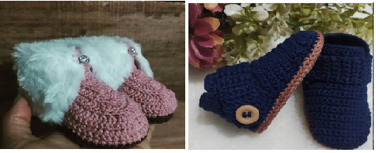
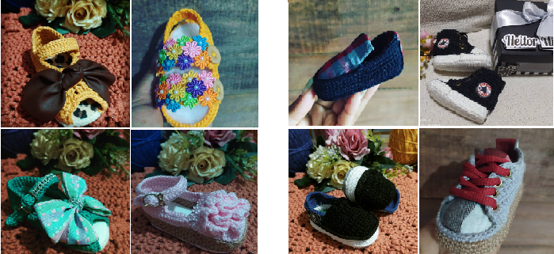

A primeira versão
Os primeiros Designs de sapatinhos de Crochê:
Essa primeira versão de Sapatos de crochê foi um espetáculo total
As primeiras coleção de Sapatinhos de crochê
As primeiras versões (coleções de sapatinhos de crochê).
As coleções São criadas com as características que o cliente pede,Com base com que temos no estoque